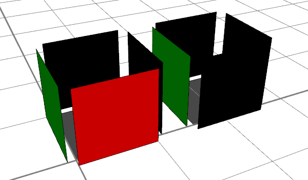
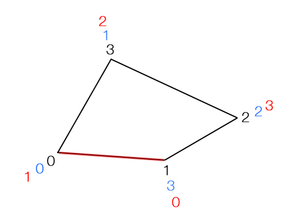

reverseNormals operation
This operation reverses the face normals of the geometry of the current shape.
Related
Examples
Reversing one facade

Left box: face with index=0 not inverted
Lot -->
extrude(world.up,1)
comp(f){side: Facade}
Facade -->
case comp.index == 0:
color(1,0,0) // red
t(0,0,0.1)
else:
color(0,1,0) // green
t(0,0,0.1)
Right box: face with index=0 inverted
Lot -->
extrude(world.up,1)
comp(f){side: Facade}
Facade -->
case comp.index == 0:
color(1,0,0) // red
t(0,0,0.1)
reverseNormals
else:
color(0,1,0) // green
t(0,0,0.1)
Advanced knowledge: Understanding the reversion process
Normals: The normal of a polygonal face is defined by the vertex order. By default, the order is counter clockwise.
Some advanced users may notice that after the reverseNormals command, the vertex order [black] is not only inverted (as in the classic mathematical definition of the normal inversion [blue]) but is offset by the value of 1 [red]. The reason for this is because the CityEngine often works with the "First Edge", which is defined by the vertex indices 0 and 1. Thus, in the reverseNormals command, the "First Edge" is retained.

black: standard vertex order of the face (counter clockwise)
blue: classic reverted vertex order
red: reverted vertex order as used in the CityEngine, with retained first edge.